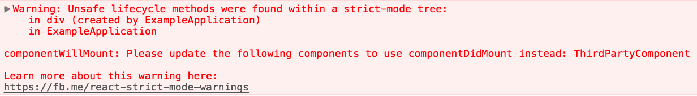
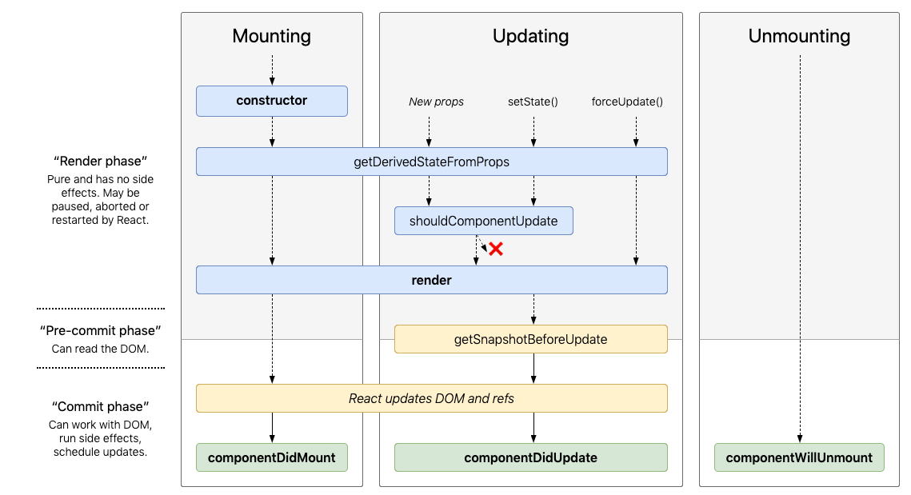

-- trabe # Modern React <span class="hide">React > 16.3. Welcome Hooks!</span> -- trabe # Modern React <span>React > 16.3. Welcome Hooks!</span> -- trabe who <div class="trabe-people"> <h1>Cecilia García</h1> <small>ceci@trabe.io</small> <br/> <small>@cecig2202</small> <br/> <br/> <br/> <h1>Clara Dopico</h1> <small>clara@trabe.io</small> <br/> <small>@clarachris</small> </div> <div class="trabe-info">  <br/> <small>https://trabe.io</small> <br/> <small>@trabe</small> </div> -- trabe-green # New React features since 16.2 -- two-columns * <div style="color: orange">New Context API</div> * <div style="color: orange">Refs API</div> * <div style="color: orange">lifecycles deprecations</div> * <div style="color: green"><StrictMode /></div> * <div style="color: green">React.Lazy</div> * <div style="color: green">Hooks</div> -- trabe-green # <StrictMode /> -- # <StrictMode /> ```javascript <React.StrictMode> <div> <MyComponent /> </div> </React.StrictMode> ```  -- # <StrictMode /> * Components with unsafe lifecycles * Legacy string ref API usage * Unexpected side effects * Deprecated findDOMNode usage (since 16.6.0) * Legacy context API (since 16.6.0) -- trabe-green # New Context API -- # New Context API * Provider/Consumer * Render prop pattern * Old context API will keep working for all 16.x releases -- code small # Legacy experimental Context API Provider ```javascript class LocaleProvider extends Component { state = { locale: "es" }; // pass down to any component in the subtree getChildContext() { return { locale: this.state.locale, changeLocale: locale => this.setState({ locale }), }; } render() { return this.props.children; } } // Defines all value types that this component will expose in the Context LocaleProvider.childContextTypes = { locale: PropTypes.string, changeLocale: PropTypes.func, }; ``` -- code small # Legacy experimental Context API Consumers ```javascript const T = ({ value }, { locale }) => ( <span> {translations[locale][value]} </span> ); // Defines the values which the component should read from the context T.contextTypes = { locale: PropTypes.string } const LocaleSelector = ({}, { changeLocale }) => ( <span> <button onClick={() => changeLocale("es")}>es</button> <button onClick={() => changeLocale("en")}>en</button> </span> ); LocaleSelector.contextTypes = { changeLocale: PropTypes.func } <LocaleProvider> <LocaleSelector /> <T value="msg1" /> <T value="msg2" /> </LocaleProvider> ``` -- code # New API ```javascript import React, { Component, createContext } from "react"; const LocaleContext = createContext({ locale: "en", changeLocale: () => null }); class LocaleProvider extends Component { state = { locale: "es" }; render() { const value = { locale: this.state.locale, changeLocale: locale => this.setState({ locale }), }; return ( <LocaleContext.Provider value={value}> {this.props.children} </LocaleContext.Provider>); } } ``` -- code # New API ```javascript const T = ({ value }) => ( <LocaleContext.Consumer> {({ locale }) => <span>{translations[locale][value]}</span>} </LocaleContext.Consumer> ); const LocaleSelector = () => ( <LocaleContext.Consumer> {({ changeLocale }) => ( <> <button onClick={() => changeLocale("es")}>es</button> <button onClick={() => changeLocale("en")}>en</button> </> )} </LocaleContext.Consumer> ); <LocaleProvider> <LocaleSelector /> <T value="msg1" /> <T value="msg2" /> </LocaleProvider> ``` -- trabe-green # New Refs API -- # New Refs API * `createRef` * Don't use legacy string ref API * Allow ref forwarding -- code # createRef ``` class FocusedInput extends Component { inputRef = React.createRef(); componentDidMount() { this.inputRef.current.focus(); } render() { return <input ref={this.inputRef} />; } } ``` -- code # forwardRef ``` javascript // Oops! A broken ref const WrappedInput = (props) => <input ref={props.ref} />; // We get a ref to the wrapper, not to the input :( <WrappedInput ref={createRef()} > // Oh wow! Now we're getting the ref to the input, not to the wrapper :) const WrappedInput = React.forwardRef((props, ref) => <input ref={ref} />); <WrappedInput ref={createRef()}> ``` -- <div class="blog"> [](https://medium.com/trabe/react-16-3-c2bf3f8962c2) </div> -- trabe-green # Lifecycle changes -- # Deprecations & Migration * componentWillMount => componentDidMount * componentWillUpdate => componentDidUpdate * componentWillReceiveProps => getDerivedStateFromProps (*) -- # [react-lifecycle-methods-diagram](http://projects.wojtekmaj.pl/react-lifecycle-methods-diagram/)  -- # (*) You probably don't need getDerivedStateFromProps  -- # getDerivedStateFromProps * One purpose: Enables a component to update its internal state as the result of changes in props * Should be used sparingly -- code # Common antipatterns using Derived State ``` javascript // 1. Unconditionally copying props to state class EmailInput extends Component { state = { email: this.props.email }; render() { return <input onChange={this.handleChange} value={this.state.email} />; } handleChange = event => { this.setState({ email: event.target.value }); }; static getDerivedStateFromProps(props, state) { return { email: props.email }; } } ``` -- code # Common antipatterns using Derived State ``` javascript // 2. Erasing state when props change class EmailInput extends Component { state = { email: this.props.email }; static getDerivedStateFromProps(props, state) { // Any time props.email changes, update state. if (props.email !== state.email) { return { email: props.email, }; } } // ... } ``` [DEMO](https://codesandbox.io/s/mz2lnkjkrx) -- # Preferred Solutions 1. Fully controlled component 2. Fully uncontrolled component with key  -- code # Preferred Solutions: 1 - Fully controlled component ```javascript const EmailInput = props => <input onChange={props.onChange} value={props.email} />; ``` -- code # Preferred Solutions: 2 - Fully uncontrolled component with key ```javascript class EmailInput extends Component { state = { email: this.props.defaultEmail }; handleChange = event => { this.setState({ email: event.target.value }); }; render() { return <input onChange={this.handleChange} value={this.state.email} />; } } <EmailInput defaultEmail={this.props.user.email} key={this.props.user.id} /> ``` -- <div class="blog"> [](https://medium.com/trabe/avoiding-stateful-components-reuse-with-react-keys-2e5f6e8cc5cb) </div> -- trabe-green # Deprecated findDOMNode -- code # Deprecated findDOMNode ```javascript import React, { Component } from "react"; import ReactDOM from "react-dom"; import ChildComponent from "./child-component"; class MyComponent extends Component { componentDidMount() { const node = ReactDOM.findDOMNode(this); /* Uses DOM node */ } render () { return <ChildComponent>{this.props.children}</ChildComponent>; } } ``` -- # Getting rid of findDOMNode * Add a ref directly to the element you want to reference * Adding a DOM node wrapper * Using ref forwarding * Explicitly pass the ref as a prop to your component -- code # Adding a DOM node wrapper ```javascript class MyComponent extends Component { componentDidMount() { const node = this.wrapper.current; /* Uses DOM node */ } wrapper = createRef(); render () { return ( <div ref={this.wrapper}> <ChildComponent>{this.props.children}</ChildComponent> </div> ); } } ``` -- code small # Using ref forwarding ```javascript class MyComponent extends Component { componentDidMount() { const node = this.childRef.current; /* ... */ } childRef = createRef(); render () { // Pass the created ref to ChildComponent return ( <ChildComponent ref={this.childRef}>{this.props.children}</ChildComponent> ); } } // ChildComponent uses React.forwardRef to obtain the ref passed to it // and then forward it to the DOM div that it renders. const ChildComponent = React.forwardRef((props, ref) => <div ref={ref}> <span>{props.children}</span> </div> ); ``` -- code small # Broken ref problem with forwardRef ⚠️ ```javascript const injectOffset = WrappedComponent => class ComponentWrapper extends Component { state = { offsetParent: { offsetLeft: 0, offsetTop: 0, }, }; componentDidMount() { this.updateProps(); } componentDidUpdate() { this.updateProps(); } updateProps = () => { const element = ReactDOM.findDOMNode(this); const offsetParent = { offsetLeft: element.offsetLeft, offsetTop: element.offsetTop }; if (!equals(offsetParent, this.state.offsetParent)) { this.setState({ offsetParent }); } } render() { return <WrappedComponent {...this.props} offsetParent={this.state.offsetParent} />; } } ``` -- code small # Explicitly pass the ref as a prop to your component 1/2 ```javascript const injectOffset = WrappedComponent => class ComponentWrapper extends Component { state = { offsetParent: { offsetLeft: 0, offsetTop: 0, }, }; domNodeRef = createRef(); componentDidMount() { this.updateProps(); } componentDidUpdate() { this.updateProps(); } updateProps = () => { if (this.domNodeRef.current) { const element = this.domNodeRef.current; const offsetParent = { offsetLeft: element.offsetLeft, offsetTop: element.offsetTop }; if (!equals(offsetParent, this.state.offsetParent)) { this.setState({ offsetParent }); } } } render() { return <WrappedComponent {...this.props} offsetParent={this.state.offsetParent} domNodeRef={this.domNodeRef} />; } } export default injectOffset; ``` -- code small # Explicitly pass the ref as a prop to your component 2/2 ```javascript import injectOffset from "./inject-offset"; const Dropdown = ({ children, content, style, offsetParent, domNodeRef }) => { const [visible, setVisible] = useState(false); const handleClick = () => { setVisible(!visible); } return ( <> <div style={style} ref={domNodeRef} onClick={handleClick}> {children} </div> {visible && ( <Popover visible={visible} position={{top: offsetParent.offsetTop, left: offsetParent.offsetLeft}} > {content} </Popover> )} </> ) } export default injectOffset(Dropdown); ``` -- <div class="blog"> [](https://medium.com/trabe/react-useref-hook-b6c9d39e2022?source=friends_link&sk=e7e7043e157ff66d6d686b577c7ec88c) </div> -- trabe-green # React.lazy & Suspense  -- # Code-Splitting * Create multiple bundles that can be dynamically loaded at runtime * Supported by bundlers like Webpack, Rollup and Browserify * Performance improvement -- # React.lazy: Code-Splitting with Suspense ```javascript const OtherComponent = React.lazy(() => import('./OtherComponent')); ``` * Load the bundle containing OtherComponent when this component is first rendered * Returns a Promise which resolves to a module with a default export containing a React component -- # React.lazy: Code-Splitting with Suspense * Lazy component should be rendered inside `<Suspense />` * Allow us to show fallback while waiting ```javascript import React, {lazy, Suspense} from 'react'; const LazyLoadedComponent = lazy(() => import('./another-component')); const MyComponent = () => ( <Suspense fallback={<div>Loading...</div>}}> <LazyLoadedComponent /> </Suspense> ); ``` -- trabe-green # Hooks  -- # Why? * Confusing classes * Giant components * Reusing logic => wrapping hell -- # Enter the hook ## Kill the class! -- # How? * Confusing classes -> No more classes * Giant components -> Logic splitting * Reusing logic -> Extraction and reusing -- # Hooks are just functions "Hooks are functions that let you “hook into” React state and lifecycle features from functional components". -- # Just functions... ah? <img src="assets/thinking.gif" style="height: 50vh" /> -- # Hooks can be: * Extracted from the component * Reused -- code # Counter implemented with a class component ```javascript import React from "react"; class Counter extends Component { state = { clicks: 0 }; increment = () => this.setState(prevState => ({ clicks: prevState.clicks + 1 })); return ( <> <p>{this.state.clicks} clicks </p> <button onClick={this.increment}>Click</button> </> ) } ``` -- code # Counter implemented with Hooks ```javascript import React, { useState } from "react"; const Counter = () => { const [clicks, setClicks] = useState(0); const increment = () => setClicks(clicks + 1); return ( <> <p>{clicks} clicks</p> <button onClick={increment}>Click</button> </> ); } ``` -- code # Extracting ```javascript import React, { useState } from "react"; const useClickCount = initialClicks => { const [clicks, setClicks] = useState(initialClicks); const increment = () => setClicks(clicks + 1); return [clicks, increment]; }; const Counter = () => { const [clicksA, incrementA] = useClickCount(0); const [clicksB, incrementB] = useClickCount(0); return ( <> <p>{clicksA} A clicks <button onClick={incrementA}>Click A</button></p> <p>{clicksB} B clicks <button onClick={incrementB}>Click B</button></p> </> ); } ``` -- code ```javascript import { useState } from "react"; const useClickCount = initialClicks => { const [clicks, setClicks] = useState(initialClicks); const increment = () => setClicks(clicks + 1); return [clicks, increment]; }; ``` -- code # Custom Hook ```javascript import { useState } from "react"; const useClickCount = initialClicks => { const [clicks, setClicks] = useState(initialClicks); const increment = () => setClicks(clicks + 1); return [clicks, increment]; }; ``` -- # Custom Hook <img src="assets/makessense.gif" style="height: 50vh" /> -- # Custom hooks * Javascript function * Name starting with "use" * Meant for extracting and sharing logic between components. -- # Rules * Only call hooks at the top level * Only call Hooks from React function components (or custom hooks) -- <div class="blog"> [](https://medium.com/trabe/react-16-7-753c61ca7a1e?source=friends_link&sk=59a88f26e2fa40202631bc27d92996d) </div> -- trabe-green # Managing state with Hooks ## useState & useReducer -- # What is the useState function? It's a Hook that lets you add React state to function components. It declares a "state variable" that React will preserve between re-renders. ```javascript import React, { useState } from "react"; const MyComponent = ({ initialState }) => { const [state, setState] = useState(initialState); return ( <p>{state}</p> ); } ``` -- # What does the updater function do? * Unlike `this.setState`, updating a state always replaces it instead of merging it. * It enqueues a re-render of the component. -- # Using multiple state variables ```javascript import React, { useState } from "react"; const ExampleWithManyStates = () => { // Declare multiple state variables! const [age, setAge] = useState(42); const [fruit, setFruit] = useState('banana'); const [todos, setTodos] = useState([{ text: 'Learn Hooks' }]); return ( //... ); }; ``` -- # What can we pass to the updater function? * The new value * A function to update the value -- code # Functional updates ```javascript import React, { useState } from "react"; const Counter = ({ initialCount }) => { const [count, setCount] = useState(initialCount); const reset = () => setCount(initialCount); const increment = () => setCount(prevCount => prevCount + 1); const decrement = () => setCount(prevCount => prevCount - 1); return ( <> Count: {count} <button onClick={reset}>Reset</button> <button onClick={increment}>+</button> <button onClick={decrement}>-</button> </> ); } ``` -- # What can we pass to useState as an argument? The only argument is the initial state. The initial state can be either the new state value or a function to update the state. -- # Lazy initial state ```javascript const [state, setState] = useState(() => { return someExpensiveComp(props); }); ``` -- # useReducer ```javascript const [state, dispatch] = useReducer(reducer, initialState); ``` ```javascript (state, action) => newState; ``` -- code # Counter example ```javascript import React, { useReducer } from "react"; import reducer from "./counter-reducer"; const Counter = ({ initialValue }) => { const [state, dispatch] = useReducer(reducer, {clicks: initialValue, prevValue: null}); return ( <> <p>{state.clicks} clicks</p> <button onClick={() => dispatch({type: "increment"})}>Increment</button> <button onClick={() => dispatch({type: "decrement"})}>Decrement</button> <button onClick={() => dispatch({type: "reset"})}>Reset</button> <button onClick={() => dispatch({type: "undo"})} disabled={state.prevValue !== null}> Undo </button> </> ); } ``` -- code # Initial value example ```javascript const reducer = (state, action) => { switch (action.type) { case "reset": return { clicks: 0, prevValue: null, }; case "increment": return { clicks: state.clicks + 1, prevValue: state.clicks, }; case "decrement": return { clicks: state.clicks - 1, prevValue: state.clicks, }; case "undo": return { clicks: state.prevValue, prevValue: null, }; default: return state; } }; ``` -- # Should I use multiple useState or useReducer? * `useState` for independent things * `useReducer` for things that change together -- <div class="blog"> [](https://medium.com/trabe/react-usereducer-hook-2b1331bb768?source=friends_link&sk=0196a0feac33482d085f207e65d21296) </div> -- trabe-green # useRef Hook -- # useRef Hook * `useRef` returns a mutable ref object * The .current property is initialized to the passed argument (initialValue) * The returned object will persist for the full lifetime of the component ```javascript const refContainer = useRef(initialValue); ``` -- # useRef vs createRef * `createRef` will always create a new ref * `useRef` takes care of returning the same ref each time as on the initial rendering -- # What can I use useRef for? * To access a child imperatively * For keeping any mutable value around similar to how you’d use instance fields in classes -- code # useRef for accesing a child imperatively ```javascript import React, { useRef } from "react"; const TextInputWithFocusButton = () => { const inputEl = useRef(null); const onButtonClick = () => { // `current` points to the mounted text input element inputEl.current.focus(); }; return ( <> <input ref={inputEl} type="text" /> <button onClick={onButtonClick}>Focus the input</button> </> ); } ``` -- <div class="blog"> [](https://medium.com/trabe/react-useref-hook-b6c9d39e2022?source=friends_link&sk=e7e7043e157ff66d6d686b577c7ec88c) </div> -- trabe-green # useMemo & useCallback -- # useMemo Hook that returns a memoized value ```javascript const memoizedValue = useMemo(() => computeExpensiveValue(a, b), [a, b]); ``` -- # How does it work? ```javascript const memoizedValue = useMemo(() => computeExpensiveValue(a, b), [a, b]); ``` `useMemo` will only recompute the memoized value when one of the dependencies has changed <div class="hidden"> ...or whenever React wants to 😅  </div> -- # How does it work? ```javascript const memoizedValue = useMemo(() => computeExpensiveValue(a, b), [a, b]); ``` `useMemo` will only recompute the memoized value when one of the dependencies has changed <div> ...or whenever React wants to 😅  </div> -- trabe-red # Handle with care Use it as a performance optimization, not as a semantic guarantee -- # useCallback Returns a memoized callback ```javascript const memoizedCallback = useCallback(() => doSomething(a, b)}, [a, b]); ``` -- # Handle with care? <div class="blog"> [](https://medium.com/trabe/can-we-rely-on-usecallback-as-a-semantic-guarantee-9329c17f40cf?source=friends_link&sk=ee065533935cc39016fcc4f951631963) </div> -- trabe-green # useEffect Hook -- # What is the useEffect Hook? It's a Hook that lets you perform side effects in function components ```javascript useEffect(() => { // Here the effect }, []); ``` -- # What is a side effect? * data fetching * subscriptions * manually changing the DOM -- # When does useEffect run? * After every render by default * Every time any of its dependencies change (second param) -- # The second param * Array of dependencies * defines when the effect should be called ```javascript useEffect(() => { document.title = `Clicked {clicks} times`; }, [clicks]); ``` -- code # Changing document title with class components ```javascript import React, { Component } from "react"; class Counter extends Component { state = { clicks: 0 }; componentDidMount() { document.title = `Clicked {this.state.clicks} times`; } componentDidUpdate() { document.title = `Clicked {this.state.clicks} times`; } increment = () => this.setState(prevState => ({ clicks: prevState.clicks + 1 })); return ( <> <p>{this.state.clicks} clicks</p> <button onClick={this.increment}>Click</button> </> ); } ``` -- code # Changing document title with Hooks ```javascript import React, { useState, useEffect } from "react"; const Counter = () => { const [clicks, setClicks] = useState(0); const increment = () => setClicks(prevClicks => prevClicks + 1); useEffect(() => { document.title = `Clicked {clicks} times`; }, [clicks]); return ( <> <p>{clicks} clicks</p> <button onClick={increment}>Click</button> </> ); } ``` -- # Lifecycle vs logic distribution <video autoplay loop height="100%"> <source src="assets/visualization.webm" type="video/webm" /> </video> -- # Effects with cleanup An effect can optionally return a function (the cleanup function) that React will call when the component unmounts and before running the effect next time -- code # Effects with cleanup. A subscription. Example with a class component ```javascript import React, { Component } from "react"; class MyComponent extends Component { state = { width: window.innerWidth }; componentDidMount() { window.addEventListener("resize", this.handleResize); } componentWillUnmount() { window.removeEventListener("resize", this.handleResize); } handleResize = () => this.setState({ width: window.innerWidth }); render() { return ( <h1>{this.state.width}</h1> ); } } ``` -- code # Effects with cleanup. A subscription. Example with Hooks ```javascript import React, { useState, useEffect } from "react"; const MyComponent = () => { const [width, setWidth] = useState(window.innerWidth); useEffect(() => { const handleResize = () => setWidth(window.innerWidth); window.addEventListener("resize", handleResize); return () => window.removeEventListener("resize", handleResize); }, []); return ( <h1>{width}</h1> ); } ``` -- # Keep your effects separated by concern -- code # Keep your effects separated by concern ```javascript import React, { useState, useEffect } from "react"; const MyComponent = () => { const [width, setWidth] = useState(window.innerWidth); useEffect(() => { const handleResize = () => setWidth(window.innerWidth); window.addEventListener("resize", handleResize); return () => window.removeEventListener("resize", handleResize); }, []); useEffect(() => { const title = width < 400 ? "It's a phone" : "It's a pc"; document.title = width; return () => document.title = ""; }, [width]); return ( <h1>{width}</h1> ); } ``` -- <div class="blog"> [](https://medium.com/trabe/react-useeffect-hook-44d8aa7cccd0?source=friends_link&sk=99a5ff5e5b0cfc30742e9ccd49c5057c) </div> -- trabe-green # useContext -- # How does it look like? ```javascript const value = useContext(MyContext); ``` Accepts a context object (the value returned from React.createContext) and returns the current context value for that context. -- code # Example of a provider ```javascript import React, { useState, useContext, useMemo, createContext } from "react"; import { noop } from "utils"; const AuthContext = createContext({ user: null, login: noop, logout: noop }); const AuthProvider = props => { const [user, setUser] = useState(null); const auth = useMemo({ user, login: user => setUser(user), logout: () => setUser(null), }, [user]); return <AuthContext.Provider value={auth} {...props} />; } export const useAuthentication = () => useContext(AuthContext); export default AuthProvider; ``` -- code # Example of a consumer ```javascript import React from "react"; import { useAuthentication } from "components/auth-provider"; const UserInfo = () => { const { user, logout } = useAuthentication(); return ( <> <p>Name: {user.name}</p> <p>Email: {user.email}</p> <button onClick={logout}>Log out</button> </> ); }; ``` -- <div class="blog"> [](https://medium.com/trabe/how-we-handle-react-context-e43d303a27a2) </div> --  -- trabe # Questions? -- full-image ## See ya!